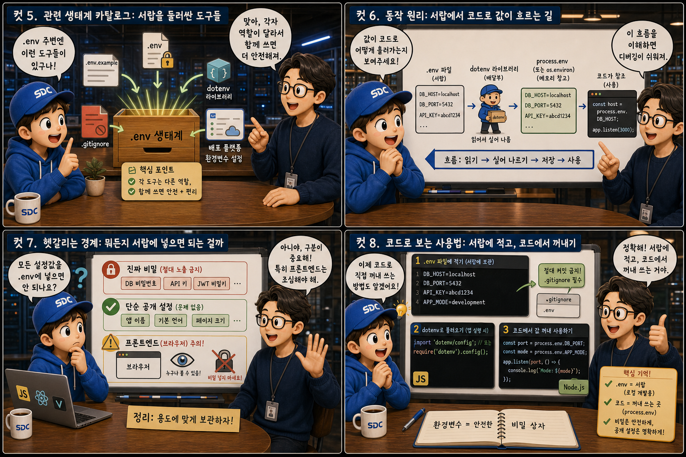

현관문에 써 붙인 비밀번호와 잠긴 서랍 속 비밀에 비유해, 코드와 설정을 분리하는 법을 12컷으로 풀어봅니다.
Hardcodedvs.env
우리가 만드는 코드에는 API 키나 데이터베이스 비밀번호처럼 절대 남에게 보여서는 안 되는 값이 자주 등장합니다. 그런데 그 값을 코드 파일 안에 그대로 적어버리면, 코드를 보는 누구나 그 비밀을 함께 보게 됩니다. 이 글에서는 이렇게 코드에 값을 직접 적는 하드코딩과, 값을 코드 밖 잠긴 서랍인 .env 파일에 넣어두는 방식이 어떻게 다른지, 집 한 채에 비유해 하나씩 살펴봅니다.
PART 1 / 3 — 정의와 위험의 발견 (컷 01–04)
fourcut-01 — 컷 01 ~ 04
컷 01
이 비밀번호는 어디에 적어야 할까
비밀번호를 현관문에 써 붙일 것인가, 잠긴 서랍에 넣어둘 것인가 — 이 질문 하나가 .env 이야기의 출발점이다.
우리가 만드는 코드에는 API 키나 데이터베이스 비밀번호처럼 절대 남에게 보여서는 안 되는 값이 자주 등장합니다. 그런데 그 값을 코드 파일 안에 그대로 적어버리면, 마치 현관문에 비밀번호를 써 붙인 포스트잇과 같아져 코드를 보는 누구나 그 비밀을 함께 보게 됩니다. 반대로 눈에 띄지 않는 구석에 자물쇠로 잠긴 서랍 하나를 두고, 그 안에 진짜 비밀을 적어 넣어둘 수도 있습니다. 이 시리즈는 그 서랍 — 바로 .env 파일 — 에 비밀을 넣어두고 안전하게 꺼내 쓰는 법을 하나씩 풀어봅니다.
컷 02
정의부터 명확히: 포스트잇과 서랍 카드
환경변수는 코드 밖에서 프로그램에 건네주는 설정값이고, .env 파일은 그 환경변수들을 개발자 컴퓨터에서 편하게 적어두는 텍스트 파일이다.
환경변수(environment variable)는 코드 문장 안에 직접 박혀 있지 않고, 프로그램이 실행되는 순간 바깥에서 건네받는 값을 말합니다. .env 파일은 이런 환경변수들을 KEY=VALUE 형태로 한 줄씩 적어 개발자가 자신의 컴퓨터에서 손쉽게 관리할 수 있도록 만든 평범한 텍스트 파일입니다. 현관문에 다닥다닥 붙은 포스트잇이 코드 속 하드코딩이라면, 서랍 안에 가지런히 정리된 카드가 바로 .env 안의 환경변수들입니다.
컷 03
나란히 비교: 하드코딩과 .env 분리
API 키를 코드에 직접 적으면 코드를 보는 누구나 그대로 훔쳐볼 수 있지만, .env에 분리해두면 코드 자체에는 값이 한 글자도 남지 않는다.
코드에 const key = "sk-live-9f8a..."처럼 실제 값을 그대로 적으면, 이 파일을 열어보는 누구든지 — 심지어 나중에 코드가 공개 저장소에 올라가면 전 세계 누구든지 — 그 키를 그대로 읽을 수 있습니다. 반면 process.env.API_KEY나 파이썬의 os.environ["API_KEY"]처럼 코드에는 값을 담는 자리표시자만 적어두고, 실제 값은 .env 파일이라는 서랍 안에 따로 넣어두면 코드 자체에는 비밀이 남지 않습니다. 문을 열어도 아무것도 붙어 있지 않은 대신, 안쪽 서랍을 열어야만 진짜 값을 확인할 수 있는 구조입니다.
컷 04
한 문장으로 정리하면
이 한 문장만 기억해도 어떤 값이 코드에 남아도 되는지, 서랍에 넣어야 하는지 대부분 구분할 수 있다.
HARDCODED
코드에 그대로 노출된 값
.ENV
코드 밖에서 주입되는 값
definition
환경변수는 코드 안에 직접 적혀 있지 않고, 프로그램이 실행되는 환경이 실행 시점에 건네주는 값입니다. .env 파일은 그런 환경변수들을 개발자가 자신의 컴퓨터에서 손쉽게 적어두고 관리할 수 있도록 만든 텍스트 파일입니다. 즉 .env는 서랍이고, 그 안에 담긴 KEY=VALUE 한 줄 한 줄이 바로 환경변수입니다.
PART 2 / 3 — 생태계와 동작 원리 (컷 05–08)

fourcut-02 — 컷 05 ~ 08
컷 05
관련 생태계 카탈로그: 서랍을 둘러싼 도구들
.env를 둘러싼 생태계에는 .env, .env.example, dotenv, .gitignore, 배포 플랫폼의 환경변수 설정 화면이 있으며 각자 다른 역할을 맡는다.
.env는 실제 값이 든 서랍이고, .env.example은 그 서랍의 빈 견본으로 어떤 키가 필요한지 이름만 보여주는 안내판입니다. dotenv는 Node.js나 Python 같은 언어에서 .env 파일을 읽어 코드가 쓸 수 있는 형태로 건네주는 작은 심부름꾼 라이브러리입니다. .gitignore는 .env 파일이 실수로 깃허브에 올라가지 않도록 막는 방패이고, Vercel이나 Railway 같은 배포 플랫폼의 환경변수 설정 화면은 실제 서비스가 돌아가는 서버에 값을 안전하게 주입하는 또 다른 서랍입니다.
컷 06
동작 원리: 서랍에서 코드로 값이 흐르는 길
앱이 실행되면 dotenv 같은 라이브러리가 .env 파일을 읽어 그 값을 process.env(또는 os.environ)에 실어주고, 코드는 그 값을 참조해 동작한다.
.env 파일→dotenv→process.env / os.environ→코드 실행
앱이 실행되는 순간, dotenv 같은 라이브러리가 .env 파일을 읽어 그 안의 KEY=VALUE 줄들을 하나씩 꺼냅니다. 이 값들은 Node.js에서는 process.env라는 큰 그릇에, Python에서는 os.environ이라는 그릇에 담겨 프로그램 전체에서 꺼내 쓸 수 있게 됩니다. 코드는 process.env.DB_PASSWORD처럼 그릇에서 필요한 값만 꺼내 쓸 뿐, 실제 비밀번호가 코드 문장 자체에 적혀 있지는 않습니다. 서랍(.env) → 심부름꾼(dotenv) → 그릇(process.env) → 코드로 이어지는 이 흐름이 값을 안전하게 전달하는 통로입니다.
컷 07
헷갈리는 경계: 뭐든지 서랍에 넣으면 되는 걸까
모든 설정값이 .env로 가야 하는 것은 아니다. 진짜 비밀과 단순한 공개 설정값은 구분해야 하고, 특히 브라우저에 그대로 노출되는 프론트엔드 환경변수에는 비밀을 담으면 안 된다.
모든 설정값을 무조건 .env에 넣는다고 안전해지는 것은 아닙니다. API 키나 비밀번호처럼 남에게 보이면 안 되는 값은 잠긴 서랍에 넣어야 하지만, 포트 번호나 앱 이름처럼 공개되어도 상관없는 값은 굳이 감출 필요가 없습니다. 더 중요한 함정은 React나 Next.js 같은 프론트엔드 환경에서 NEXT_PUBLIC_ 접두사가 붙은 환경변수는 빌드 시점에 브라우저 코드 안에 그대로 심어져 사용자 누구나 열어볼 수 있게 된다는 점입니다. 그래서 이런 프론트엔드 공개 변수에는 애초에 비밀번호나 시크릿 키를 넣으면 안 되고, 진짜 비밀은 반드시 서버(백엔드)에서만 접근하는 환경변수로 남겨야 합니다.
컷 08
코드로 보는 사용법: 서랍에 적고, 코드에서 꺼내기
.env 파일에 키=값을 적어두고, 코드에서는 dotenv로 불러온 뒤 process.env(또는 os.environ)로 그 값을 참조한다.
.env 파일 내용
DB_PASSWORD=abcd1234
API_KEY=sk-live-9f8a
PORT=3000
# git에는 절대 올리지 않는다
.env 파일에는 DB_PASSWORD=abcd1234처럼 키와 값을 등호로 이어 한 줄씩 적어둡니다. Node.js에서는 require('dotenv').config() 한 줄로 이 파일을 읽어들인 뒤 process.env.DB_PASSWORD로 값을 꺼내 쓰고, Python에서는 os.environ["DB_PASSWORD"]로 같은 일을 합니다. 두 언어의 문법은 다르지만 원리는 같습니다. 코드에는 값을 담을 자리표시자만 있고, 실제 값은 서랍(.env)에서 실행 시점에 꺼내온다는 것입니다.
PART 3 / 3 — 실전 감각과 요약 (컷 09–12)
fourcut-03 — 컷 09 ~ 12
컷 09
흔한 실수: 서랍째로 세상에 올리기
.env 파일을 .gitignore에 등록하지 않으면 실수로 GitHub에 그대로 올라가 전 세계에 비밀번호가 공개될 수 있다.
⚠ .env pushed to public repo
가장 흔하면서도 치명적인 실수는 .env 파일을 .gitignore에 넣는 것을 깜빡하고 git add ., git commit, git push를 그대로 실행해버리는 것입니다. 이렇게 되면 서랍째로 GitHub 같은 공개 저장소에 올라가버려서, 그 저장소를 볼 수 있는 누구나 데이터베이스 비밀번호와 API 키를 그대로 읽을 수 있게 됩니다.
✓ .gitignore로 사전 차단
.gitignore 파일 안에 .env 한 줄만 적어두면 이 파일은 애초에 git의 추적 대상에서 빠집니다. 프로젝트를 시작할 때 가장 먼저 해야 할 일 중 하나가 바로 이 한 줄을 적어두는 것입니다.
실제로 공개 저장소에 올라간 키는 몇 분 안에 자동으로 스캔당해 악용되는 사례도 많습니다. 서랍을 통째로 트럭에 실어 온 세상에 공개해버리는 셈이니, 커밋 전에는 반드시 이 서랍이 빠져 있는지 확인하는 습관이 필요합니다.
컷 10
트레이드오프 비교표: 안전함과 번거로움
코드와 비밀정보를 분리하면 보안은 크게 좋아지지만, 팀원 각자가 자신의 .env 파일을 새로 만들어야 하는 번거로움이 생긴다.
보안과 편의는 늘 맞바꿔야 한다
비교 축
분리했을 때 — 장점
그 대가 — 번거로움
보안
코드가 유출돼도 비밀은 안전
새 팀원은 값을 못 받는다
버전 관리
저장소가 깨끗하게 유지된다
각자 로컬에 .env를 따로 만들어야 함
환경별 설정
개발 / 운영 값을 분리해 관리
환경마다 값을 따로 관리해야 함
팀 협업
값 유출 걱정 없이 코드 공유 가능
값 공유를 위한 별도 소통(.env.example, 문서화)이 필요
코드와 비밀정보를 분리해두면 코드가 실수로 유출되거나 공개되더라도 실제 비밀번호와 키는 안전하게 지킬 수 있습니다. 하지만 그 대가로, 새로 합류한 팀원이나 새 컴퓨터에서 프로젝트를 처음 실행할 때는 .env 파일이 저장소에 없기 때문에 각자 자신의 .env 파일을 새로 만들고 필요한 값을 채워 넣어야 하는 번거로움이 생깁니다. 개발, 테스트, 운영 환경마다 값이 다르다면 그만큼 관리해야 할 .env도 여러 벌이 됩니다. 보안을 지키는 대신 초기 설정 작업이 한 단계 늘어나는 것, 이것이 .env 분리 방식의 자연스러운 트레이드오프입니다.
컷 11
실전 팁: 목록은 공유하고 값은 각자 채우기
.env.example로 필요한 키 목록만 공유하고 실제 값은 각자 채우며, GitHub에 올리기 전에는 항상 git status로 .env가 포함되지 않았는지 확인한다.
📋 팀과 나누기 → .env.example 공유
.env.example에는 키 이름만, 값은 비워둔다
새 팀원은 목록을 보고 자신만의 .env를 만든다
팀원마다 실제 값은 서로 달라도 된다
🔍 커밋 전 → git status 확인
git status 결과에 .env가 있는지 확인
.env가 보이면 즉시 .gitignore 점검
커밋 전 눈으로 한 번 더 확인하는 습관
팀 프로젝트에서는 실제 값이 든 .env 대신, 키 이름만 적고 값은 비워둔 .env.example 파일을 저장소에 올려 공유하는 것이 좋습니다. 그러면 새 팀원은 어떤 환경변수가 필요한지 목록만 보고, 자신만의 실제 값을 채운 .env 파일을 로컬에서 직접 만들 수 있습니다. 그리고 커밋하기 전에는 습관적으로 git status를 실행해 변경된 파일 목록에 .env가 끼어 있지 않은지 눈으로 한 번 더 확인하는 것이 사고를 막는 가장 확실한 안전장치입니다.
컷 12
실전 판별 + 핵심 요약: 서랍 안에 남는 것
값이 사람마다, 환경마다 달라지거나 남에게 보이면 안 되는 것이면 .env로 넣고, 코드 어디서나 똑같이 써도 되는 값이면 코드에 남겨도 된다.
가장 간단한 판별법은 이것입니다. 그 값이 남에게 보이면 위험하거나, 사람마다 혹은 환경마다 달라져야 한다면 .env 서랍에 넣으십시오. 반대로 어디서 실행하든 항상 똑같이 써도 되는 값이라면 굳이 감추지 않고 코드에 남겨도 괜찮습니다. 현관문에는 아무것도 붙어 있지 않고, 진짜 중요한 것은 잠긴 서랍 안에만 있는 집처럼, 좋은 코드는 겉으로 봐서는 아무 비밀도 드러나지 않습니다.
코드와 비밀은 분리한다.env는 절대 커밋하지 않는다.env.example로 목록만 공유process.env로 불러온다프론트엔드 공개변수엔 비밀 금지판별법: 남에게 보이면 안 되면 .env로
하나의 집, 두 개의 자리
코드는 겉으로 드러나는 현관이고, .env는 눈에 띄지 않는 잠긴 서랍입니다. 비밀은 서랍에 남겨두고, 코드에는 그 서랍을 여는 참조만 남겨두는 것 — 이것이 안전한 설정 관리의 전부입니다.